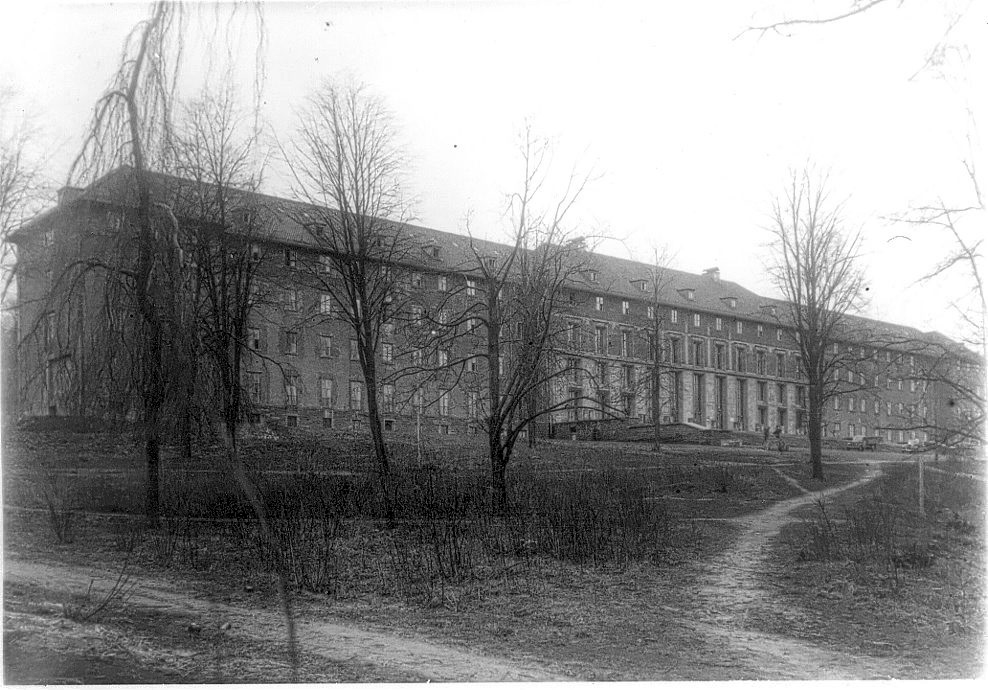

Wie ein historisches Gebäude in Waldbröl — einst Ort großen Leidens — zu einem Zentrum für Achtsamkeit, Heilung und Frieden wurde.
Im September 2008 schickte Zen-Meister Thich Nhat Hanh (Thầy) eine Gruppe von 20 Mönchen und Nonnen aus Plum Village, dem von ihm gegründeten buddhistischen Kloster im Südwesten Frankreichs, in die Stadt Waldbröl, etwa eine Stunde von Köln entfernt, um in Deutschland eine nicht gewinnorientierte Einrichtung namens Europäisches Institut für Angewandten Buddhismus (EIAB) zu gründen.
Seit seiner Zeit als junger Mönch war es Thầys tiefer Wunsch, den Buddhismus in die moderne Welt zu bringen. Er wollte nicht, dass der Buddhismus ein exotisches philosophisches Ideal bliebe, das für die meisten Menschen unerreichbar ist, sondern dass Menschen aus allen Gesellschaftsschichten in der Lage wären, den Buddhismus anzuwenden, um ihr eigenes Leiden und das ihrer Familienangehörigen und der weiteren Gemeinschaft zu verringern und zu verändern. Dieser Traum wird von den Mönchen, Nonnen und Laienfreunden der Internationalen Plum Village Sangha geteilt.
Das Studienprogramm des EIAB umfasst jährliche Retreats über Ostern, Sommer und Neujahr sowie Wochenend-Achtsamkeitskurse für diejenigen, die nach Möglichkeiten suchen, mit den Belastungen und Herausforderungen des modernen Lebens umzugehen. Unter den mehr als 100 Kursen, die wir jährlich anbieten, findet sich ein breites Spektrum an Themen wie buddhistische Psychologie, Umgang mit Wut und Depression, Bewältigung psychologischer Krisen, Unterstützung bei der Heilung und Förderung einer gesunden Kommunikation zwischen Eltern und Kindern, Familienmitgliedern, Verwandten und Freunden. Wir bieten auch Kurse an, die sich unter anderem an Polizeibeamte, Politiker, Psychotherapeuten, Pädagogen und Geschäftsleute richten.
Diese sowie Programme für Jugendliche und Schüler, interreligiöser Austausch und Dialog, öffentliche Vorträge, Konzerte und die Unterstützung regionaler Aktivitäten wurden sowohl auf dem EIAB-Campus als auch in Städten in ganz Deutschland und an anderen Orten in Europa sowie auf Lehrreisen in Hongkong und Thailand organisiert. Seit ihrer Gründung hat die EIAB-Sangha Hunderttausende von Teilnehmenden erreicht und sie in die Praktiken der Achtsamkeit, der Liebe und des Verständnisses eingeführt. In vielen Fällen haben diese Praktiken zu tiefgreifender Heilung und Transformation geführt und den Menschen und ihren Familien Freude, Glück und Harmonie gebracht.
Um Räumlichkeiten zu finden, die groß genug sind, um seine Vision eines Instituts für angewandten Buddhismus zu verwirklichen, das im Dienste ganz Europas wirkt, suchten Thầy und seine Assistenten jahrelang in Deutschland, bis sie auf Waldbröl und ein bewaldetes Anwesen mit einem großen historischen Gebäude aufmerksam wurden. Es wurde von den Bundesbehörden erworben, und am 10. September 2008 zogen wir in das, was Thầy das Asoka-Institut (Viện Vô Ưu) nannte.
Ein Jahr später hatten wir das Glück, ein zweites, kleineres Gebäude ganz in der Nähe zu erwerben. Zu Ehren des Klosters, in das Thầy in Vietnam eintrat, um Mönch zu werden, wurde dieses zweite Gebäude „Kloster des Großen Mitgefühls" genannt. In Anlehnung an den Namen der Stadt Waldbröl („Bröl" ist der Name eines Baches, der dort entspringt) lautet der vollständige Titel „Kloster des Großen Mitgefühls im Land der Wälder und Bäche" (Lâm Tuyền Địa Đại Bi Tự). Ein Teil des Asoka-Instituts dient als Unterkunft für die Mönche des EIAB, während ein Teil des Klosters des Großen Mitgefühls Wohnsitz der Nonnen ist.

Das heute als Asoka-Institut bekannte Gebäude wurde zwischen 1895 und 1897 als Krankenhaus für Patienten mit geistigen und körperlichen Behinderungen errichtet.i Das von der evangelischen Kirchengemeinde geführte Krankenhaus wurde am 9. Juni 1897 eingeweiht.ii
Nach der Machtergreifung der Nationalsozialisten 1933 gehörten geistig oder körperlich behinderte Menscheniii zu denjenigen, die im Rahmen der nationalsozialistischen Rassenideologie Zwangssterilisationeniv, Zwangsabtreibungen oder Euthanasiev unterworfen wurden.
Nach der Gründung des EIAB konnten wir durch weitere historische Studien und Gespräche mit den Anwohnerinnen und Anwohnern mehr über die traumatischen Ereignisse erfahren, dievi mit diesem Ort während der Nazizeit verbunden sind.
Auf die Frage, warum er Waldbröl für sein Institut ausgewählt hatte, sagte Thầy oft lächelnd, dass es Waldbröl war, das ihn und die Plum Village Sangha ausgewählt hat. Es war Thầys großes Mitgefühl, den Menschen zu helfen, ihr Leiden zu versöhnen und zu transformieren — nicht nur in Vietnam, sondern auf der ganzen Welt —, das ihn an diesen Ort zog. Die spirituelle Energie von Thầy und der Plum Village Sangha umarmt weiterhin alle, die dort gelitten haben, wo sich jetzt das EIAB befindet: ein Heiligtum für Versöhnung, Transformation und Frieden.
Nach dem Zweiten Weltkrieg wurde das Gebäude erneut zu einem Krankenhaus. Im Jahr 1969 zog das Krankenhaus in einen größeren Komplex um, und das Gebäude wurde für den Grenzschutz und damit verbundene Tätigkeiten genutzt. Von 1975 bis 2006 wurde es von der Deutschen Bundeswehr betrieben.
Das Hauptgebäude hat eine Länge von 150 Metern und eine Breite von 12 bis 16 Metern. Es erstreckt sich über sechs Stockwerke, einschließlich des Untergeschosses, und umfasst eine Gesamtfläche von etwa 12.000 Quadratmetern. Diese Fläche reicht aus, um bis zu 500 Personen für Retreats und Kurse zu beherbergen.
Es gibt auch kleinere Räume für Kurse und Meetings, aber keine einzige Räumlichkeit für größere Versammlungen — weshalb das Institut von Anfang an eine Genehmigung für den Bau einer Meditationshalle beantragt hat.
In der 10., der Jubiläumsausgabe des EIAB-Magazins, die 2018 auf unserer Website veröffentlicht wurde, beschreiben wir ausführlich die behördlichen und baulichen Hürden, die überwunden werden mussten, bevor wir das EIAB für Besucher öffnen konnten. Außerdem stellten wir einen Zeitplan für die Projekte vor, die wir durchgeführt haben, um die Unterkunfts- und Speisemöglichkeiten für Freundinnen und Freunde, die an Retreats und anderen Programmen teilnehmen, zu verbessern und um dieses denkmalgeschützte Gebäude nach höchsten Erhaltungs- und Umweltstandards zu bewahren.
Dank der Liebe, Großzügigkeit und Unterstützung vieler Freundinnen und Freunde in aller Welt konnten wir bis 2010 ein Fünftel des Asoka-Gebäudes renovieren und 2012 das Erdgeschoss fertigstellen. Wir haben das Privileg, dort eine wunderschöne Sammlung von Thầys wertvollen Kalligraphien dauerhaft auszustellen.
Mit der kontinuierlichen Unterstützung von Freundinnen und Freunden mit „grünem Daumen" wird das EIAB durch Gartenprojekte rund um das Institut weiter aufgewertet. Im Jahr 2019 haben wir zwei weitere Abschnitte des Asoka-Gebäudes renoviert. Bis 2021 wurde das gesamte Kloster des Großen Mitgefühls, einschließlich des Daches, vollständig renoviert.
Um die Energie dieses Geländes auszugleichen und von den Leiden der Menschen, die hier in früheren Zeiten lebten, zu heilen, haben wir die weitläufigen Gärten des Instituts mit buddhistischen Statuen und Themen gestaltet, die eine ruhige, friedliche Energie erzeugen. Es gibt Wege, die zur Gehmeditation einladen, und architektonische Elemente, die zur Kontemplation über die Entwicklung des buddhistischen Denkens anregen. Ein 21 Meter hoher Stupa, der eine große Bronzeglocke beherbergt, enthält in seinen Strukturelementen wesentliche buddhistische Lehren.
Wir haben auch einen Säuleneingang in das Institut eingebaut, der mit den vier Blumen des unbegrenzten Geistes geschmückt ist: liebende Güte, Mitgefühl, einfühlsame Freude und Inklusivität. Diese „Blumen" ruhen auf einem Steinbalken, der von vier Säulen getragen wird — sie stellen die vierfache Sangha des Buddha dar: Mönche, Nonnen sowie männliche und weibliche Laien. An der Spitze dieser Struktur sind zwei Kalligraphien von Thầy in deutscher Sprache eingemeißelt: „Dies ist, weil das ist" und „Frieden in sich selbst, Frieden in der Welt".
Seit Herbst 2013, nach vier Jahren Planung und Bau, kann sich jeder, der zum Praktizieren ins EIAB kommt, über eine moderne Küche und einen schönen Speisesaal mit weitem Blick freuen. Davor befindet sich ein kleiner Lotusteich in Form einer Mondsichel oder eines jungen Blattes. Um den Lotusteich und den Speisesaal herum wurde eine ringförmige Straße gebaut, die die beiden Hauptbereiche des EIAB, das Asoka-Institut und das Kloster des Großen Mitgefühls, harmonisch miteinander verbindet.
Nach 16 Jahren, in denen wir zahllose Hindernisse überwinden konnten, wird 2025 endlich mit dem Bau unserer Meditationshalle begonnen: die Zen-Meister Thich Nhat Hanh Große Halle des Friedens. Wir werden auch die Renovierung der beiden anderen Teile des Asoka-Instituts fortsetzen. Wir hoffen, dass bis 2030 alle Gebäude des EIAB vollständig renoviert sein werden.
Es gibt noch viel zu tun, um Thầys Vision eines Instituts für angewandten Buddhismus für Europa und darüber hinaus zu verwirklichen. Wir fangen gerade erst an, das Fundament zu legen. Dennoch sind wir zuversichtlich, dass wir in der Lage sein werden, Thầys Wunsch zu erfüllen, einen Beitrag zur Linderung des Leidens in der Welt und zur Kultivierung des Friedens zu leisten.
Wir sind zuversichtlich, dass in den nächsten Jahren der Bau der Zen-Meister Thich Nhat Hanh Großen Halle des Friedens und weitere Renovierungsarbeiten am Asoka-Institut realisiert werden können — dank der Liebe und Großzügigkeit von Freundinnen und Unterstützerinnen von Thầy in aller Welt. Dies wird es einer dauerhaften Institution, die Thầys Vision des angewandten Buddhismus verkörpert, ermöglichen, sich in Europa für die Welt vollständig zu manifestieren.
Bhikshu Thích Chân Pháp Ấn, und die Schwestern und Brüder des Europäischen Instituts für Angewandten Buddhismus22. Januar 2025
| Diagnose | Frauen | Männer |
|---|---|---|
| Schizophrenie | 253 | 105 |
| Lähmung | 16 | 21 |
| Schwachsinn | 74 | 52 |
| Epilepsie | 67 | 72 |
| Cholera | 2 | 1 |
| Enzephalitis | 12 | 8 |
| Alkoholismus | 4 | 2 |
| Psychopathie | 2 | 4 |
| Gesamt | 430 | 265 |
Wir sprechen offen über die Vergangenheit dieses Ortes. Schreiben Sie uns, wenn Sie mehr erfahren möchten, oder besuchen Sie uns persönlich.